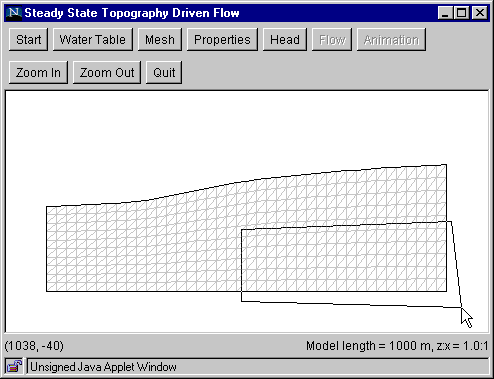
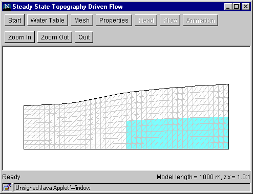

Step 4: Properties
This step assigns hydraulic properties (hydraulic conductivity and porosity) to model elements.
- Click the "Properties" button to bring up the Properties
Dialog Box.
- Select the “isotropic” or “anisotropic” option.
- Five sets of hydraulic conductivity (m/s) and porosity (%) values
are available for assignment to model elements. Each set is represented
by a color. Default values are initially provided, but you may alter
any or all of these values in the edit boxes.
- Select a set of hydraulic conductivity and porosity values by
clicking the color icon. The selected icon is indicated by a thick black frame.
- Click "OK" to close the dialog box.
- Draw a polygon to enclose those elements you want to assign the
selected property values. A polygon is drawn by clicking at its vertices.
To finish drawing the polygon, double click the last vertex.
- The elements enclosed by the polygon are filled with the color you selected
in the dialog box.


Additional zones with the same properties may be defined by drawing
additional polygons. To specify a zone with different property values,
click the "Properties" button again to bring up the dialog box and click
on a different color icon. Then click "OK," draw a polygon as before.
The newly selected elements now are filled with the new color. Drawing
mistakes can be rectified by overdrawing with another zone. Any part of
the mesh not covered by a polygon will have properties corresponding to
the white color.
Go to Step 5
Back to Step 3
Return to Introduction
|